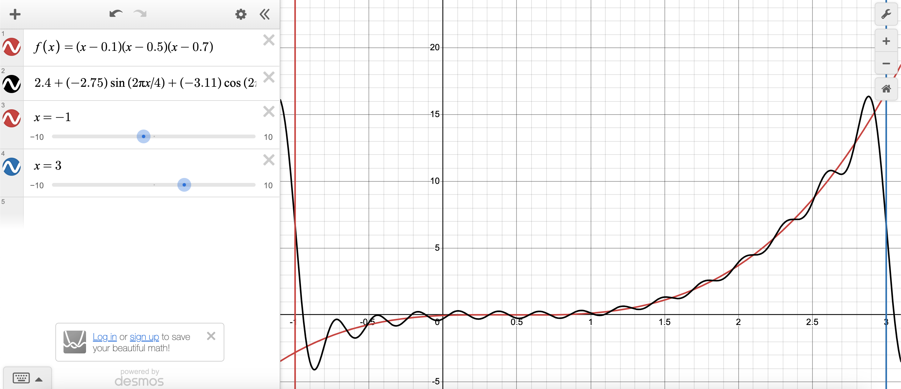
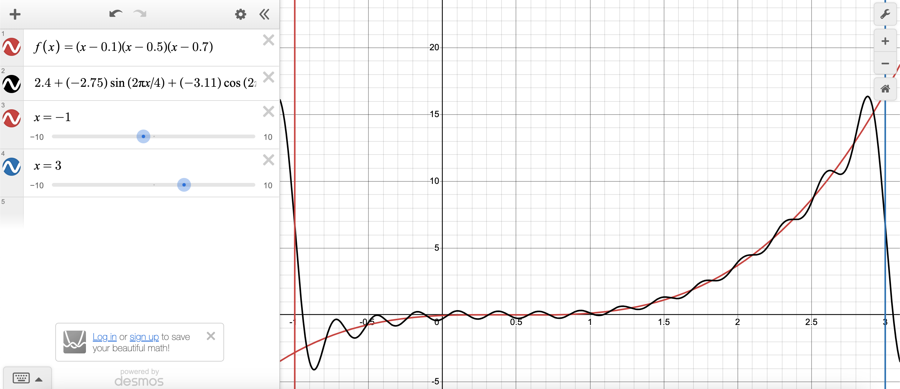
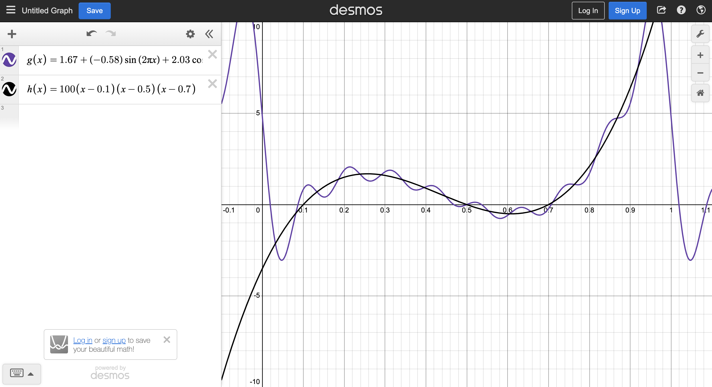

This session, I generalized my program to work over any interval [a, b]. Because this only took a few minutes, I did not record a video, but I have attached my result in this blog.
In progress
Take a series of coordinates that represent some function of frequency over time on
the interval [0, 1].
Then, decompose this input into various sinusoidal functions whose sum approximate
the coordinates to a high degree of accuracy.
Manually create a function that is the sum of sinusoidal functions over [0, 1]
, take 50–100 of its coordinates to give to the program.
Expected Output: Exact same sinusoidal functions back.
Past this checkpoint, the objective is to generalize this over any finite interval
[a, b].
Same as checkpoint 1, except the function should be over some large finite interval
(e.g. [4, 104]).
Moreover, during the generalization to [a, b], the project should also
seek to develop a Spectral Filtering algorithm.
Record audio, overlay noise over it such that it is unintelligible. Let
g(t) represent this noise function as a function of frequency over
time.
Expected Output: Given the noise function, the program can
filter out the noise such that the original audio is produced.
Future objectives are past the scope of my current knowledge in mathematics and will
be revisited upon completion of the first objectives or after 2nd year Multivariable
Calculus (MAT237Y).
This session, I generalized my program to work over any interval [a, b]. Because this only took a few minutes, I did not record a video, but I have attached my result in this blog.
This session, I programmed the decomposition method and tested the algorithm on various functions. In the meantime, I also created helper functions to make the output more readable. Below is an image of an approximation for a polynomial on [0, 1]:
This session, I programmed the function class and successfully coded the integral calculator method.
This is my first day working on this project. The goal of this session was to make a
realistic plan of action and outline the objectives of this project.
The objectives of this project were written
[0, 1]
n coefficients for the functions in the Fourier basis[a, b]CONTENT